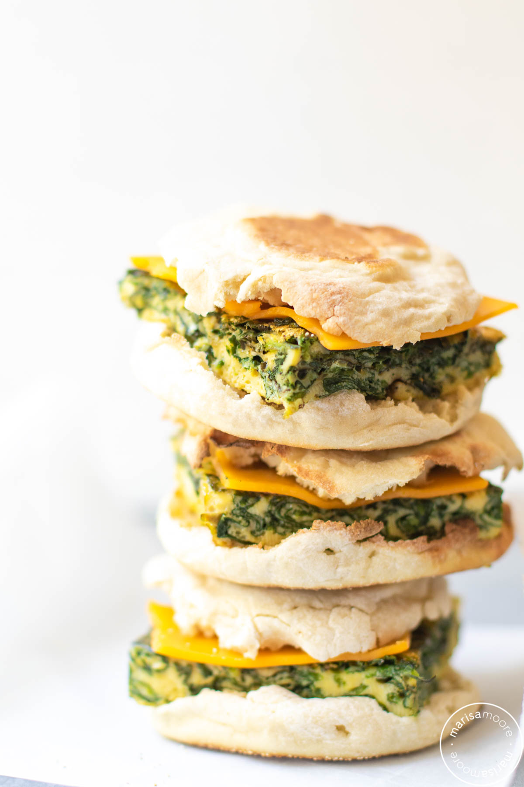

Eggs Breakfast Recipe

Image of Eggs Recipe
The purpose of this recipe is to provide a high protein breakfast option to start off your mornings.
It also contains spinach, providing a good source of iron for vegetarians.
Ingredients
- 2x Eggs
- 1 Cup of Baby Spinach
- 1/2 Cup of Cheddar Cheese
- 2 slices of Wheat Bread
- 1 Tablespoon of Olive Oil
- 1 Teaspoon of Black Pepper
Steps
- Pour the olive oil on a medium heated skillet
- Chop up the baby spinach in a food processor
- Cook the baby spinach on heated skillet for 1 minute
- Crack the two eggs into the skillet, and mix the content of the skillet together. Let cook until mixture starts to solidify
- Place slices of bread onto toaster with setting 3
- Flip the egg omelette to the other side and pour cheese on one half
- Once cheese starts to melt, sprinkle the black pepper over the cheese and fold the non cheese & pepper half of the omelette over
- Once the bread is out of the toaster, put on place and place the folded omelette over one of the bread slices, and then place the other bread slice on top.
- Enjoy!